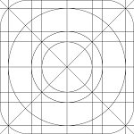

my explorations
-

NoteApp
a tool that keeps ideas within reach, making notes visible, simple, and part of daily life
i write software with purpose. for me, building is about shaping ideas into tools that make life simpler and more meaningful. each project is a reflection of curiosity, imagination, and the pursuit of happiness. this space is where i share what i create — ongoing explorations of how technology can align with thought, design, and intent.
a tool that keeps ideas within reach, making notes visible, simple, and part of daily life